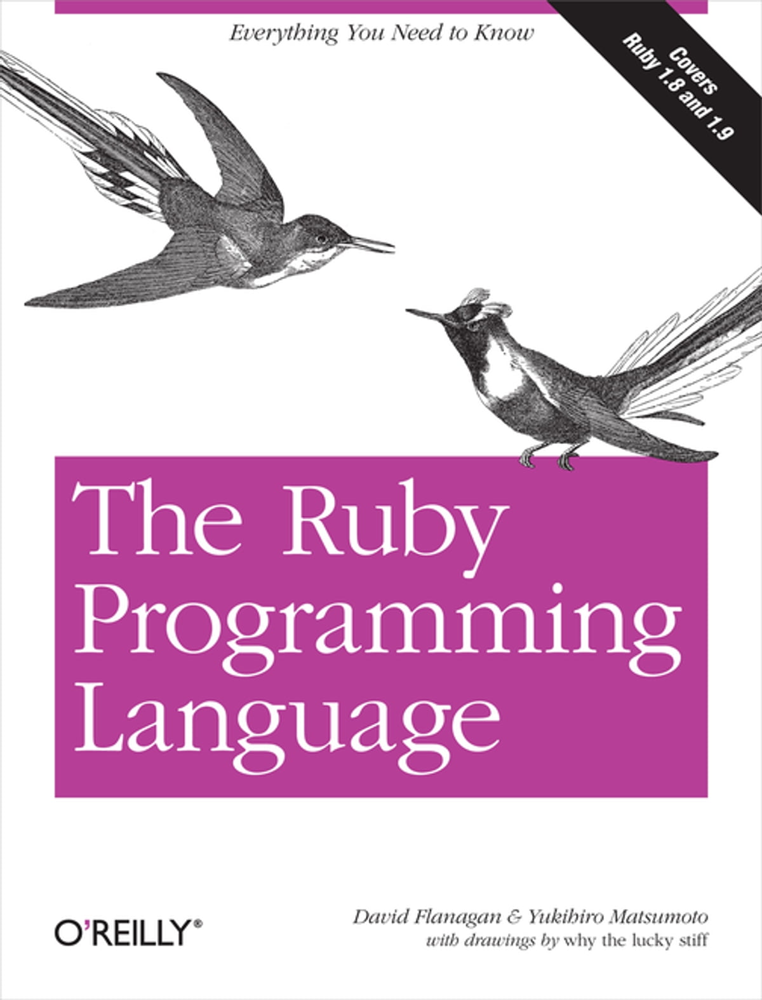
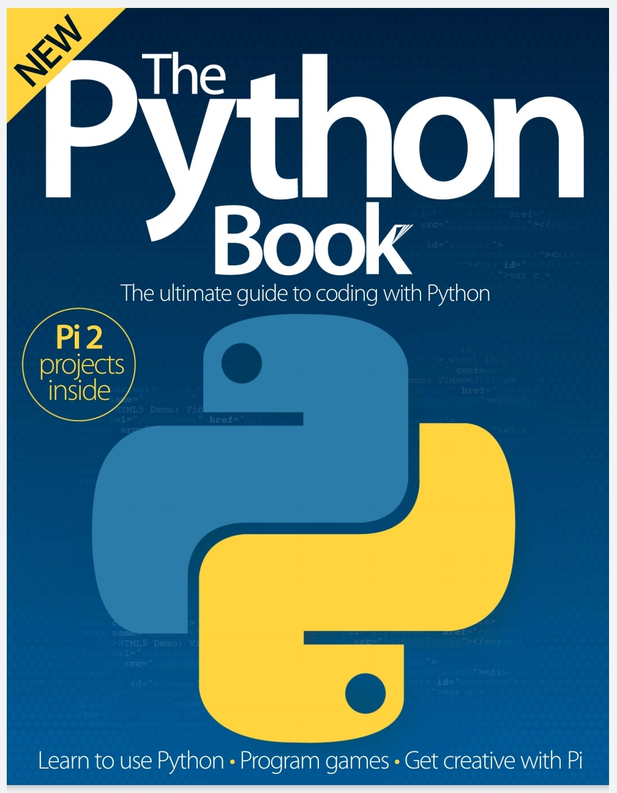

𝕷𝖎𝖇𝖗𝖆𝖗𝖞 𝕸𝖆𝖓𝖆𝖌𝖊𝖒𝖊𝖓𝖙 𝕾𝖞𝖘𝖙𝖊𝖒
𝐎𝐛𝐣𝐞𝐜𝐭-𝐨𝐫𝐢𝐞𝐧𝐭𝐞𝐝 𝐩𝐫𝐨𝐠𝐫𝐚𝐦𝐦𝐢𝐧𝐠 𝐥𝐚𝐧𝐠𝐮𝐚𝐠𝐞𝐬

C++ (/ˈsiː plʌs plʌs/, pronounced "C plus plus") is a high-level general-purpose programming language created by Danish computer scientist Bjarne Stroustrup and first released in 1985 as an extension of the C programming language, or "C with Classes". The language has expanded significantly over time, and modern C++ now has object-oriented, generic, and functional features in addition to facilities for low-level memory manipulation. It is almost always implemented as a compiled language, and many vendors provide C++ compilers, including the Free Software Foundation, LLVM, Microsoft, Intel, Embarcadero, Oracle, and IBM, so it is available on many platforms.[13]
C++ was designed with systems programming and embedded, resource-constrained software and large systems in mind, with performance, efficiency, and flexibility of use as its design highlights.[14] C++ has also been found useful in many other contexts, with key strengths being software infrastructure and resource-constrained applications,[14] including desktop applications, video games, servers (e.g. e-commerce, web search, or databases), and performance-critical applications (e.g. telephone switches or space probes)𝐑𝐞𝐚𝐝 𝐦𝐨𝐫𝐞..
Buy C++ at Amazon

Java is a high-level, class-based, object-oriented programming language that is designed to have as few implementation dependencies as possible. It is a general-purpose programming language intended to let programmers write once, run anywhere (WORA),[17] meaning that compiled Java code can run on all platforms that support Java without the need to recompile.[18] Java applications are typically compiled to bytecode that can run on any Java virtual machine (JVM) regardless of the underlying computer architecture. The syntax of Java is similar to C and C++, but has fewer low-level facilities than either of them. The Java runtime provides dynamic capabilities (such as reflection and runtime code modification) that are typically not available in traditional compiled languages. As of 2019, Java was one of the most popular programming languages in use according to GitHub,[citation not found][19][20] particularly for client–server web applications, with a reported 9 million developers.[21]
Java was originally developed by James Gosling at Sun Microsystems. It was released in May 1995 as a core component of Sun Microsystems' Java platform 𝐑𝐞𝐚𝐝 𝐦𝐨𝐫𝐞..
Buy Java at Amazon
PHP is a general-purpose scripting language geared toward web development.[8] It was originally created by Danish-Canadian programmer Rasmus Lerdorf in 1993 and released in 1995.[9][10] The PHP reference implementation is now produced by The PHP Group.[11] PHP was originally an abbreviation of Personal Home Page,[12][13] but it now stands for the recursive initialism PHP: Hypertext Preprocessor.[14] PHP code is usually processed on a web server by a PHP interpreter implemented as a module, a daemon or as a Common Gateway Interface (CGI) executable. On a web server, the result of the interpreted and executed PHP code – which may be any type of data, such as generated HTML or binary image data – would form the whole or part of an HTTP response. Various web template systems, web content management systems, and web frameworks exist which can be employed to orchestrate or facilitate the generation of that response. Additionally, PHP can be used for many programming tasks outside the web context, such as standalone graphical applications[15] and robotic drone control.[16] PHP code can also be directly executed from the command line. 𝐑𝐞𝐚𝐝 𝐦𝐨𝐫𝐞..
buy PHP at Amazon
 Ruby is an interpreted, high-level, general-purpose programming language which supports multiple programming paradigms. It was designed with an emphasis on programming productivity and simplicity. In Ruby, everything is an object, including primitive data types. It was developed in the mid-1990s by Yukihiro "Matz" Matsumoto in Japan. Ruby is dynamically typed and uses garbage collection and just-in-time compilation. It supports multiple programming paradigms, including procedural, object-oriented, and functional programming. According to the creator, Ruby was influenced by Perl, Smalltalk, Eiffel, Ada, BASIC, Java and Lisp.Matsumoto has said that Ruby was conceived in 1993. In a 1999 post to the ruby-talk mailing list, he describes some of his early ideas about the languageI was talking with my colleague about the possibility of an object-oriented scripting language. I knew Perl (Perl4, not Perl5), but I didn't like it really, because it had the smell of a toy language (it still has). The object-oriented language seemed very promising. I knew Python then. But I didn't like it, because I didn't think it was a true object-oriented language – OO features and also 𝐑𝐞𝐚𝐝 𝐦𝐨𝐫𝐞..
Buy Ruby at Amazon
Python is a high-level, general-purpose programming language. Its design philosophy emphasizes code readability with the use of significant indentation.[33]
Python is dynamically typed and garbage-collected. It supports multiple programming paradigms, including structured (particularly procedural), object-oriented and functional programming. It is often described as a "batteries included" language due to its comprehensive standard library.[34][35]
Guido van Rossum began working on Python in the late 1980s as a successor to the ABC programming language and first released it in 1991 as Python 0.9.0.[36] Python 2.0 was released in 2000. Python 3.0, released in 2008, was a major revision not completely backward-compatible with earlier versions. Python 2.7.18, released in 2020, was the last release of Python .Python consistently ranks as one of the most popular programming languages.Python was conceived in the late 1980s[42] by Guido van Rossum at Centrum Wiskunde & Informatica (CWI) in the Netherlands as a successor to the ABC programming language, which was inspired by SETL,[43] capable of exception handling and interfacing with the Amoeba operating system 𝐑𝐞𝐚𝐝 𝐦𝐨𝐫𝐞..
Buy python at Amazon
Copyright@2023 library Management System. All rights reseved